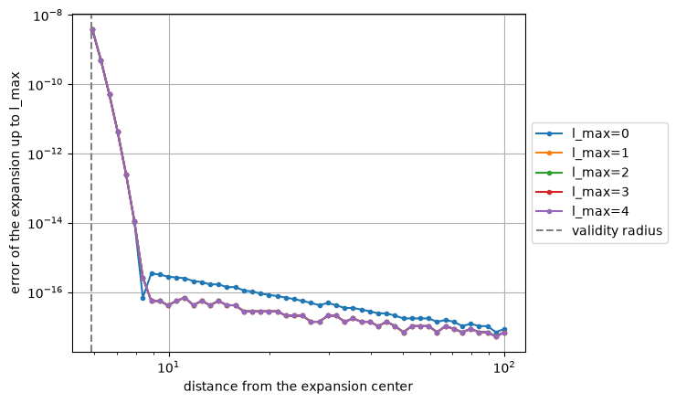
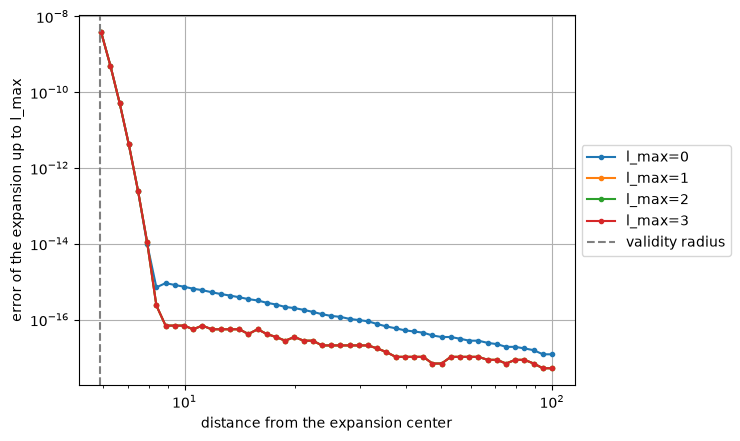
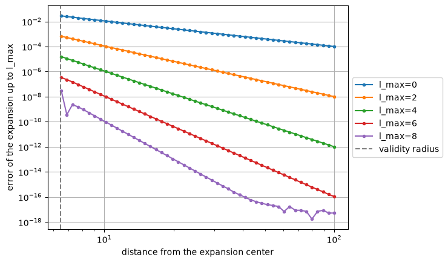
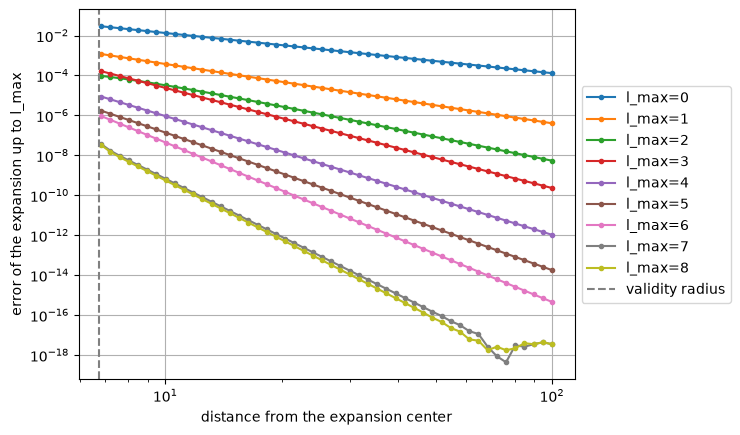
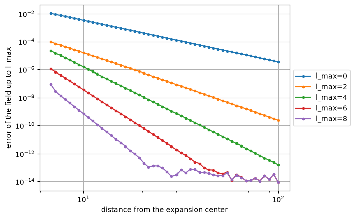
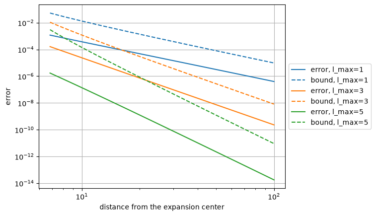

Accuracy
In this notebook, we compare the multipole expansion of various orders with exact results.
We use gaussian charge distributions,
whose potential is known exactly:
Set up a grid containing the charge distribution, and functions for the charge density and the exact potential:
import numpy as np
import matplotlib.pyplot as plt
from scipy.special import erf
from multipoles import MultipoleExpansion
x = y = z = np.linspace(-10, 10, 101)
X, Y, Z = np.meshgrid(x, y, z, indexing="ij")
sigma = 1.5
def charge_density(charges, positions):
rho = np.zeros_like(X)
for Q, (x0, y0, z0) in zip(charges, positions):
R2 = (X - x0)**2 + (Y - y0)**2 + (Z - z0)**2
rho += Q * np.exp(-R2 / sigma**2) / (np.pi**1.5 * sigma**3)
return rho
def exact_potential(x, y, z, charges, positions):
phi = 0
for Q, (x0, y0, z0) in zip(charges, positions):
r = np.sqrt((x - x0)**2 + (y - y0)**2 + (z - z0)**2)
phi += Q * erf(r / sigma) / r
return phi
def points_along_x(mpe):
"""Distances r from the expansion center where the expansion is valid, and the points
at these distances in x-direction."""
r = np.logspace(np.log10(1.01 * mpe.validity_radius), 2, 50)
x0, y0, z0 = mpe.center
return r, (x0 + r, y0, z0)
def plot_errors(mpe, charges, positions, l_maxs):
"""Plot the error in x-direction from the expansion center, where the expansion is valid."""
r, xyz = points_along_x(mpe)
exact = exact_potential(*xyz, charges, positions)
for l_max in l_maxs:
error = np.abs(mpe(*xyz, l_max=l_max) - exact)
plt.loglog(r, error, "-o", markersize=3, label=f"l_max={l_max}")
plt.axvline(mpe.validity_radius, color="gray", linestyle="--", label="validity radius")
plt.legend(loc="center left", bbox_to_anchor=(1, 0.5))
plt.xlabel("distance from the expansion center")
plt.ylabel("error of the expansion up to l_max")
plt.grid()
plt.show()
A single gaussian at the origin
For a radially symmetric charge distribution, the monopole term is already the exact solution outside the charge distribution:
charges, positions = [1], [(0, 0, 0)]
mpe = MultipoleExpansion({"discrete": False, "rho": charge_density(charges, positions), "xyz": (X, Y, Z)}, l_max=8)
plot_errors(mpe, charges, positions, range(5))

All curves are on top of each other at the level of the numerical integration error, so the monopole is sufficient.
A shifted gaussian
Shifting the charge distribution away from the origin doesn't change this, because the expansion is done about the center of charge:
charges, positions = [1], [(1, 0, 0)]
mpe = MultipoleExpansion({"discrete": False, "rho": charge_density(charges, positions), "xyz": (X, Y, Z)}, l_max=8)
print("center of charge:", mpe.center.round(6) + 0.0) # + 0.0 turns -0.0 into 0.0
plot_errors(mpe, charges, positions, range(4))
center of charge: [1. 0. 0.]

If we expand about the origin instead, the charge distribution is no longer symmetric about the expansion center, and we need the higher multipoles:
mpe = MultipoleExpansion(
{"discrete": False, "rho": charge_density(charges, positions), "xyz": (X, Y, Z)}, l_max=8, center=(0, 0, 0)
)
plot_errors(mpe, charges, positions, range(0, 9, 2))

Several gaussians
With several gaussian charges, many multipole moments are non-zero:
charges = [1, -0.5, -1.5, 0.75]
positions = [(0, 0, 0), (1, 0, 0), (0, 1, 0), (-1, -1, -0.5)]
mpe = MultipoleExpansion({"discrete": False, "rho": charge_density(charges, positions), "xyz": (X, Y, Z)}, l_max=8)
plot_errors(mpe, charges, positions, range(9))

As expected, the more moments we take into account, the smaller the error. The error decreases
geometrically with l_max, and the faster, the farther away we are (see Accuracy in
the theory). For this charge distribution, expanding up to the octupole (l_max=3) should be sufficient for
most applications.
The field
The field \(\mathbf{E} = -\nabla\Phi\) is equally accurate. We compare it with the numerical derivative of the exact potential:
r, (x, y, z) = points_along_x(mpe)
h = 1e-4
E_exact = np.array([
-(exact_potential(x + h * e[0], y + h * e[1], z + h * e[2], charges, positions)
- exact_potential(x - h * e[0], y - h * e[1], z - h * e[2], charges, positions)) / (2 * h)
for e in np.eye(3)
])
for l_max in range(0, 9, 2):
error = np.linalg.norm(mpe.field(x, y, z, l_max=l_max) - E_exact, axis=0)
plt.loglog(r, error, "-o", markersize=3, label=f"l_max={l_max}")
plt.legend(loc="center left", bbox_to_anchor=(1, 0.5))
plt.xlabel("distance from the expansion center")
plt.ylabel("error of the field up to l_max")
plt.grid()
plt.show()

The error bound
error_bound gives a rigorous upper bound of the truncation error (see Accuracy in the
theory). For the several gaussians from above, the bound (dashed) lies above the actual error (solid), and has
the same slope:
r, xyz = points_along_x(mpe)
exact = exact_potential(*xyz, charges, positions)
for l_max, color in zip([1, 3, 5], ["C0", "C1", "C2"]):
error = np.abs(mpe(*xyz, l_max=l_max) - exact)
plt.loglog(r, error, "-", color=color, label=f"error, l_max={l_max}")
plt.loglog(r, mpe.error_bound(*xyz, l_max=l_max), "--", color=color, label=f"bound, l_max={l_max}")
plt.legend(loc="center left", bbox_to_anchor=(1, 0.5))
plt.xlabel("distance from the expansion center")
plt.ylabel("error")
plt.grid()
plt.show()

The bound is rigorous for any charge distribution with the same radial distribution of absolute charge, so for this one it is one to three orders of magnitude too pessimistic. It does not include the error of the numerical integration on the grid.
Choosing l_max automatically
With l_max='auto', multipoles chooses the smallest l_max for which the error bound on the boundary of the
grid is below tol, relative to \(\sum |q| / r\). Here we check the actual error on the faces of the grid:
rho = charge_density(charges, positions)
total_abs_charge = np.sum(np.abs(charges))
for tol in [1e-2, 1e-4, 1e-6]:
mpe = MultipoleExpansion.from_density(rho, (X, Y, Z), l_max="auto", tol=tol)
boundary = mpe.boundary_values()
mask = boundary != 0
exact = exact_potential(X[mask], Y[mask], Z[mask], charges, positions)
r = np.linalg.norm(np.stack([X[mask], Y[mask], Z[mask]]).T - mpe.center, axis=1)
relative_error = np.max(np.abs(boundary[mask] - exact) * r / total_abs_charge)
print(f"tol={tol:g}: l_max={mpe.l_max}, largest relative error on the boundary {relative_error:.1e}")
tol=0.01: l_max=3, largest relative error on the boundary 6.8e-05
tol=0.0001: l_max=8, largest relative error on the boundary 3.1e-09
tol=1e-06: l_max=14, largest relative error on the boundary 3.3e-14